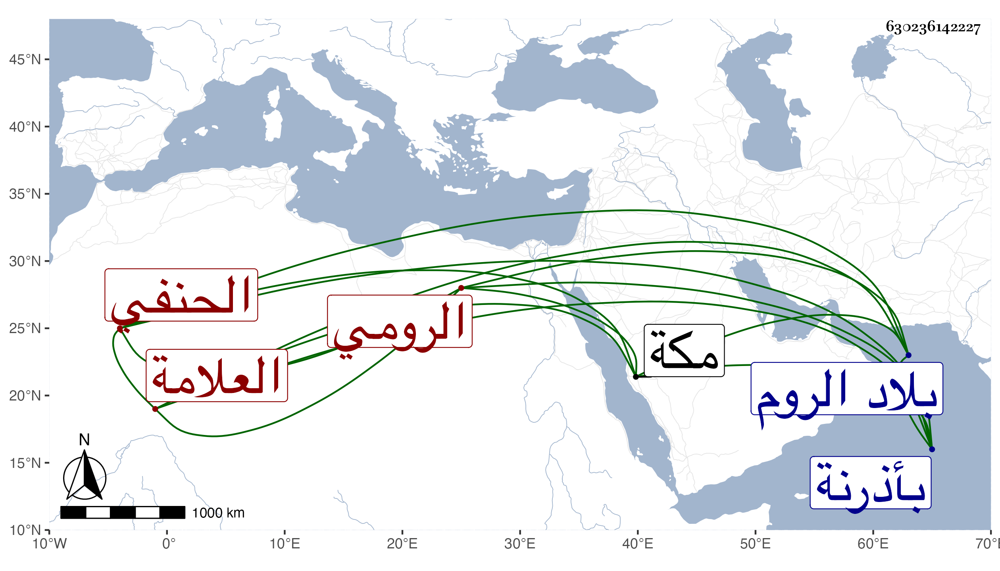

0902Sakhawi.DawLamic.ITO20230111-ara1.EIS1600.630236142227
Biography ID: 630236142227
693
خضربك بن القاضي جلال بن صدر الدين بن حاجي إبراهيم العلامة خير الدين الرومي الحنفي . أحد علماء الروم ومدرسيهم وأعيانهم . ولد في مستهل ربيع الأول سنة عشر وثمانمائة ، ونشأ بمدينة بورسا فتفقه بالبرهان حيدر الخافي والفناري وقرا يعقوب القرماني وغيرهم وبرع في النحو والصرف والمعاني والبيان وغيرها وصنف وجمع وأفاد ودرس ومن تصانيفه حواشي على حاشية الكشاف وللتفتازاني وأرجوزة في العروض وأخرى في العقائد وولي تدريس الجامع الكبير بأذرنة ومدرسة السلطان مراد وقدم مكة في سنة تسع وخمسين فلقيه ابن عزم المغربي وأفادنيه وقال انه مات سنة ستين .
